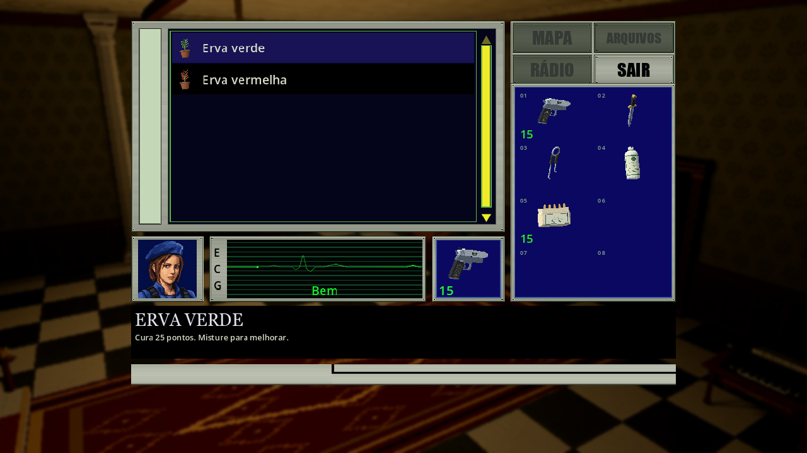
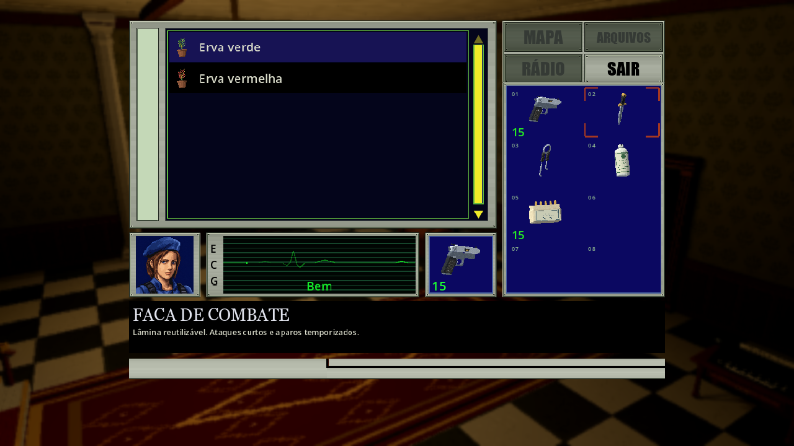
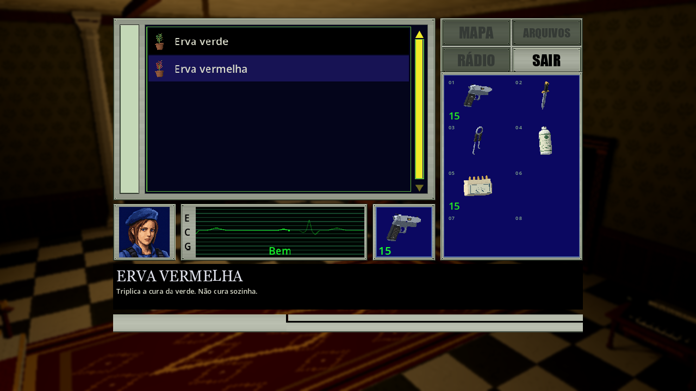
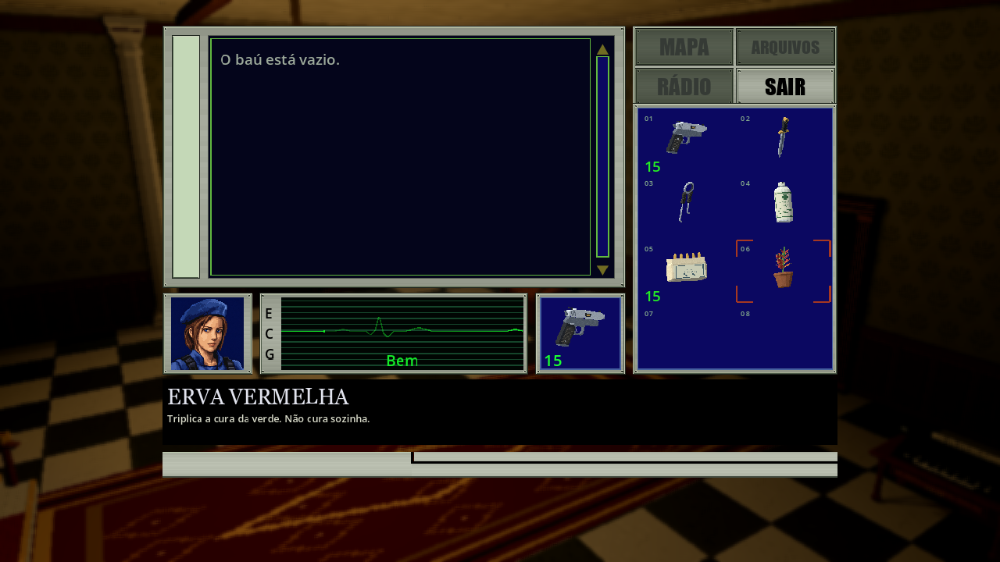

Detalhes dos itens armazenados · 15/10/2026
Um clique em uma linha da lista do baú mostra o nome e a descrição desse item no painel preto inferior, sem retirar ou alterar quantidades/versões. A retirada aceita Enter, duplo clique ou arraste. Selecionar um item do inventário volta a mostrar seus detalhes; clicar novamente na mesma linha do baú retoma os dela. Setas, roda e barra de rolagem também acompanham o item selecionado.

Os detalhes seguem o índice autoritativo selecionado da lista. Se outro jogador alterar o conteúdo desse slot, o próximo snapshot atualiza o texto; se o item desaparecer, o painel acompanha a próxima seleção visível. Ao retirar o último item, o painel fica vazio. Reabrir o baú começa sem detalhes antigos.
Pausa, desfoque e música abafada permanecem somente no solo. No cooperativo, autoridade/relógio continuam ativos e o cenário fica apenas escurecido.
Navegação entre os painéis · complemento de 15/10
← leva o foco à lista do baú; → ao inventário. ↑/↓ percorrem os itens ocupados da lista ou todos os slots do inventário, em ordem numérica, incluindo vazios. Seleção e nome/descrição mudam juntos. Cada lado lembra sua última posição durante a abertura atual; é possível começar pelas setas, sem clicar. Os limites mantêm o foco dentro do painel. A lista vazia também aceita foco e permite voltar ao inventário, sem mostrar detalhes antigos.


As setas apenas selecionam/examinam; Enter agora transfere conforme o painel com foco, como descrito no complemento abaixo. Mouse, rolagem, duplo clique e arraste continuam disponíveis.
Game/ChestNavigation.cs intercepta as setas com o baú aberto, antes
da navegação espacial padrão do Godot. Atualiza foco e seleção pelo fluxo
existente, sem enviar comandos de transferência nem mudar inputs da simulação.
ChestInventoryList.FocusSelection retoma a linha anterior ou o controle da
lista vazia. Configurações e inventário comum mantêm sua navegação própria.
Fixture da rodada de navegação: Tools/PauseMenuAcceptance.tscn -- --style-suite --chest-list-suite --chest-navigation-suite,
ampliada por Tools/ChestNavigationAcceptance.cs. Confere entrada sem mouse,
troca/retomada dos dois lados, todos os slots, limites, lista vazia, detalhes,
ausência de mudanças em itens/versões pelas setas ou movimento do jogador.
Naquela rodada Enter ainda não retirava; essa expectativa foi substituída pelo
complemento de transferência abaixo, preservando o resultado histórico.
Reexecuta também os casos de snapshots e duplo clique abaixo. Saída em
Build/chest-navigation-2026-10-15/, logs Build/chest-navigation-*.log.
As capturas específicas são publicadas por
python -B Tools/build_public_galleries.py --refresh-chest-navigation.
Os resultados de 238 + 72 abaixo pertencem à rodada anterior aos novos atalhos.
Rodada da navegação: 322 verificações aprovadas, zero falhas, solo, host e
cliente ENet local, incluindo entrada/alternância sem mouse, memória por painel,
todos os slots, limites e baú vazio. Sem erros, avisos ou MTU no log do App.
Passaram 86 CoreTests, 16 verificações Python, build C# sem avisos/erros
e importação Godot .NET. Capturas dos três estados de foco conferidas no renderer.
Regressão de transferências reexecutada após a navegação: 72 verificações
aprovadas, zero falhas, em solo/host, incluindo duplo clique/arraste e rejeições
por capacidade/versão. Log sem erros ou avisos. Não houve falha intermediária
nesta rodada; logs completos em Build/chest-navigation-*.log.
Transferência por Enter · complemento de 15/10
Com o baú aberto, Enter no inventário guarda a pilha focada; na lista do baú retira a pilha focada. Enter numérico faz o mesmo. Segurar a tecla não repete a operação. Slots vazios e a lista vazia não enviam transferências. Setas e clique simples continuam selecionando e mostrando nome/descrição. Duplo clique e arraste permanecem disponíveis. Pausa, desfoque e música abafada continuam somente no solo; o cooperativo permanece ativo.

O evento é consumido antes de ui_accept, apenas no baú e nos slots com foco.
TransferChestItem atende Enter e duplo clique pela mesma validação de versão,
capacidade e comandos deposit/withdraw existentes. Não há alteração de Core,
protocolo ou save. Confirmações, arraste ativo e outras telas mantêm seus inputs.
Fixture Tools/PauseMenuAcceptance.tscn -- --style-suite --chest-list-suite --chest-navigation-suite --chest-enter-suite,
com Tools/ChestEnterAcceptance.cs: App solo, host e cliente ENet local,
teclas sintéticas na GUI real, depósito, retirada, Enter numérico, Echo,
slots/lista vazios, versões antigas, quantidades, detalhes e pausa por modo.
Reexecuta navegação, snapshots e duplo clique. A regressão
PresentationAcceptance --chest-only cobre também arraste e capacidade cheia.
Resultados/capturas em Build/chest-enter-2026-10-15/; logs
Build/chest-enter-*.log. Publicação das duas capturas pelo gerador
python -B Tools/build_public_galleries.py --refresh-chest-enter, com hashes.
Rodada do App: 364 verificações aprovadas, zero falhas, nos três modos,
em 16:9 e 4:3. Log final sem erros, avisos ou MTU. Passaram 86 CoreTests,
16 verificações Python, build C# sem avisos/erros e importação Godot .NET.
As duas capturas foram conferidas no renderer.
Regressão do baú: 72 verificações aprovadas, zero falhas, solo/host,
incluindo duplo clique, arraste, capacidade cheia, versões antigas e retorno
ao inventário. Log também sem erros/avisos. Documentação, MkDocs strict e links,
recursos/âncoras de 74 HTMLs passaram; 397 registros públicos com hashes.
Inputs sintéticos e ENet local não comprovam controles físicos ou Internet.
Sem alteração de protocolo/save, o smoke completo e a matriz de reconexão/restore
não foram reexecutados nesta rodada. Agregado local: Build/chest-enter-2026-10-15/report.json.
Uma execução inicial parou no teste: a versão antiga injetada no slot não foi
restaurada para o caso seguinte. Corrigido o preparo da fixture, a reexecução
acima passou; o log inicial foi preservado em
Build/chest-enter-render-fixture-failed.log. Não exigiu ajuste da transferência.
Implementação e validação original
ChestInventoryList.SelectionChanged informa clique/navegação à GameUi.
SelectedItem distingue a origem transitória dos detalhes: inventário ou lista
do baú, com índice e limites do snapshot atual. RefreshItems não emite o evento,
evitando recursão; a atualização normal resolve mudanças da lista. Nenhum novo
comando de retirada é enviado por seleção; Core, slots/versões, rede e save
permanecem sem alteração por este patch.
Fixture Tools/PauseMenuAcceptance.tscn -- --style-suite --chest-list-suite
com Tools/ChestListDetailsAcceptance.cs: solo, host e App cliente de autoridade
dedicada ENet em localhost. Cliques/setas reais na GUI com eventos sintéticos,
troca entre listas, mesma linha, snapshots de substituição/remoção, retirada
por duplo clique, conservação de quantidade e limpeza ao esvaziar/reabrir.
PresentationAcceptance --chest-only reexecuta também arraste/capacidade/versões.
Perfis/campanhas isolados; preferências pessoais preservadas e restauradas.
Rodada do App: 238 verificações aprovadas, zero falhas, nos três modos. Inclui nome/descrição sem retirada, alternância entre listas, navegação por teclado, mudanças de snapshot, retirada única por duplo clique e limpeza. Log sem erros, avisos ou MTU. Passaram também 86 CoreTests, 16 verificações Python, build C# sem avisos/erros e importação Godot .NET. Regressão adicional do baú: 72 verificações aprovadas, zero falhas, solo e host cooperativo, incluindo detalhes da lista, duplo clique, arraste, capacidade cheia, versões antigas e retorno ao inventário. Log também sem erros ou avisos.
Resultados e capturas locais em Build/chest-list-details-2026-10-15/;
logs Build/chest-list-*.log. Base Git e059383 em árvore com alterações
preexistentes preservadas, sem alegar SHA final. Gerador público:
python -B Tools/build_public_galleries.py --refresh-chest-list, com hashes no
manifesto e captura substituída em media/history/pre-chest-list-2026-10-15/.
Inputs sintéticos e ENet local não homologam controles físicos, Internet, campanha completa ou desempenho. Sem mudança de rede/save de campanha, não é reexecutada a matriz completa de concorrência/reconexão/restore nesta rodada.